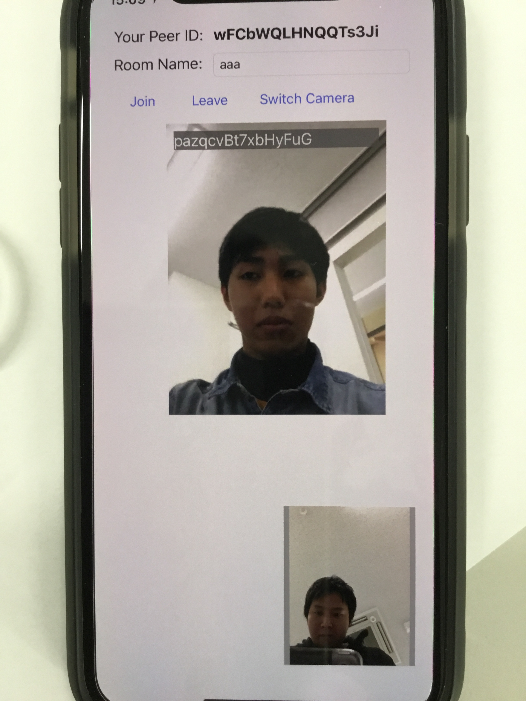

SKY VOICE(スカイボイス)
障がい者の方々に朗報です。 2018年1月14日（日）、自由に世界中を歩き回れるアプリがリリースしました！！
アプリの紹介
このアプリは障がいを持った方々を世界中の人々が音声によるガイドにより、目的地までご案内するアプリです。

～価格～
無料
～使い方～
使い方はとっても簡単。
アプリをインストールし、起動さえすれば
世界中の人々とつながり、その方々のサポートが
目的地まで導きます！
～操作の流れ～
①
スマートフォンにアプリをインストール
↓
②
起動
↓
③
地図が起動されますので、あなたが利用したい場所(目的地)を地図上でタップします
↓
④
GPS機能により、あなたの目的地の案内にふさわしいガイドをマッチングします。
↓
⑤
あなたにふさわしいガイドとご対面。
あとはその人の指示に従いましょう。
＝評価＝
★★★★★★★
＝情報＝
販売元： ：鯖江市ハッカソン
サイズ ：500MB
カテゴリ ：福祉
言語 ：日本語その他言語
年齢 ：対象年齢15歳～